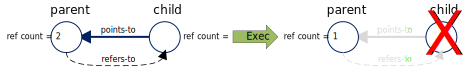
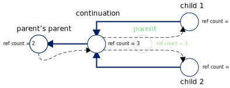
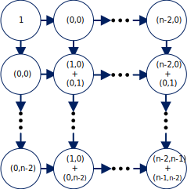

- Generated by
 1.8.18
1.8.18
|
Games Task Scheduler (GTS)
A multi-processor scheduling framework for games engines
|
This section covers the Micro-scheduler's low-level Task interface. It is the interface used to build all the Parallel Patterns.
In GTS a Task is modeled by the Task class. Tasks can be syntactically represented in three ways:
The activation frame of a Task is the gts::Task execute method. It is were a Task's work is done, and it is where dependenies can be dynaimcally added to executing Task.
The gts::TaskContext is a parameter that is passed into the activation frame. It contains contextual information about the Task like
The Task returned from the Activation Frame is executed immediately, completely bypassing the scheduler. We'll see how to used this as an optimization later.
Task are dynamic, reference counted objects. They are created by a Micro-scheduler with a reference count of one and they lose a reference when executed. If their reference count becomes zero after execution, they are destroyed.
Later we'll explore how to manipulate the reference count.
Task dependencies are modeled by making a Task a child of another Task, or by making a Task a continuation of another Task.
Child Tasks model forks. Children refer to their parent Task directly, and a parent Task refers to its children in reference count only. When a child Task has finished executing, it decrements its parent’s reference count.

The safest way to add a child is with a reference count, as it automatically adds the reference to the parent.
Yet, this can be inefficient when adding multiple children. In this case, it is better to manually adjust the reference count and then add the children without reference increment
Continuations are Tasks that join two or more child Tasks. The child Tasks refer directly to the continuation and the continuation Task refers to its children in reference count only. When creating a continuation, the current Task is unlinked from the task graph and the continuation in link in its place.

When a child finishes executing, it decrements its continuations’s reference count. If the reference count is one, meaning that it is the last child, it executes the continuation.
Here is an example of inserting a continuation Task into a Task graph.
GTS offer two options for joins: blocking joins and continuations.
Blocking joins are joins that wait for a Task to complete. Blocking joins block the current execution stream, however they do not block the executing thread. Instead the executing thread executes work in the Micro-scheduler.
Here is an example of blocking with gts::Task::waitForAll. Note the extra reference count added for the wait. /(This is done to distinguish a waiting parent from a waiting continuation./)
We can also used gts::Task::spwandWaitForAll, which combines spawning and blocking. It is slightly more efficient for the last child Task.
Continuations are explicit join Tasks that execute immediately when their dependencies have completed. Generally, continuations do not suffer the latency of blocking joins, but they do require explicit linking into a Task graph.
Bypassing is an optimization where a Task is returned from the activation frame instead of being spawned. It is an optimization because the returned Task is executed immediately instead of being store and retrieved from from the Micro-scheduler’s internal Task storage. Bypassing with a child Tasks requires the use of continuations becuase there is no longer an option of waiting. Bypassing fire-and-forget Tasks have no constraints.
Task recycling is an optimization that reuses the currently executing Task as a new Tasks. Once the current Task finished excuting it is not destroyed and instead treaded as a newly spawned Task.
Here are the safe ways to recycle a Task:
The following examples demonstrate the creation of weakly dynamic and strongly dynamic graphs in GTS. The examples create graphs for a 2D prefix sum using a naïve wavefront algorithm.

This example prebuilds a Task graph and then executes its. It also demonstrates manipulating a root Task's reference count.
This example generates the graph as the execution unfolds. It moves the data out of the Tasks and into a memoization table. It does not require special treatment if the last Task like the previous example did. Further, it is more efficient since parallelizes the creation of the graph.
This section will cover various race condition that can occur when setting up dependencies
1.8.18